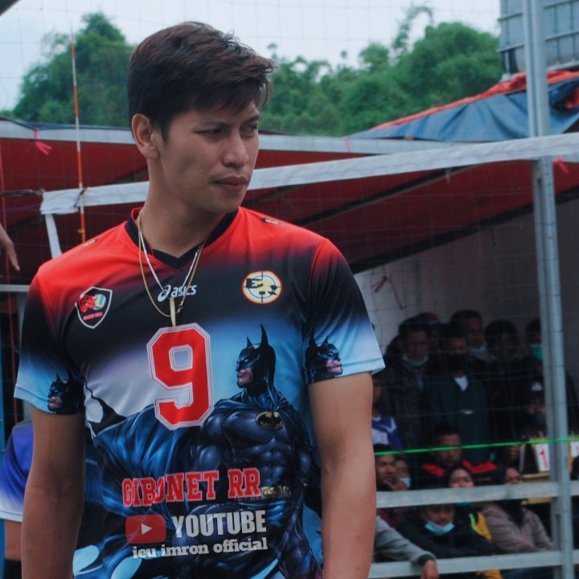
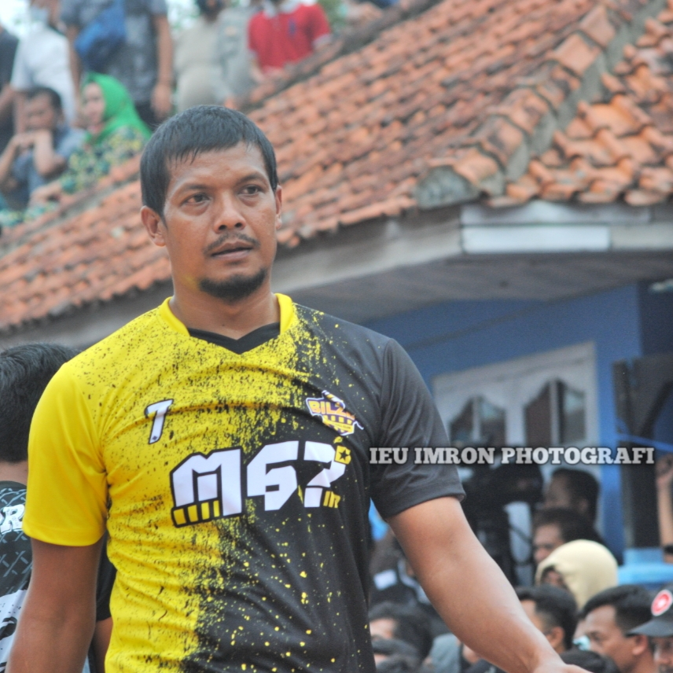
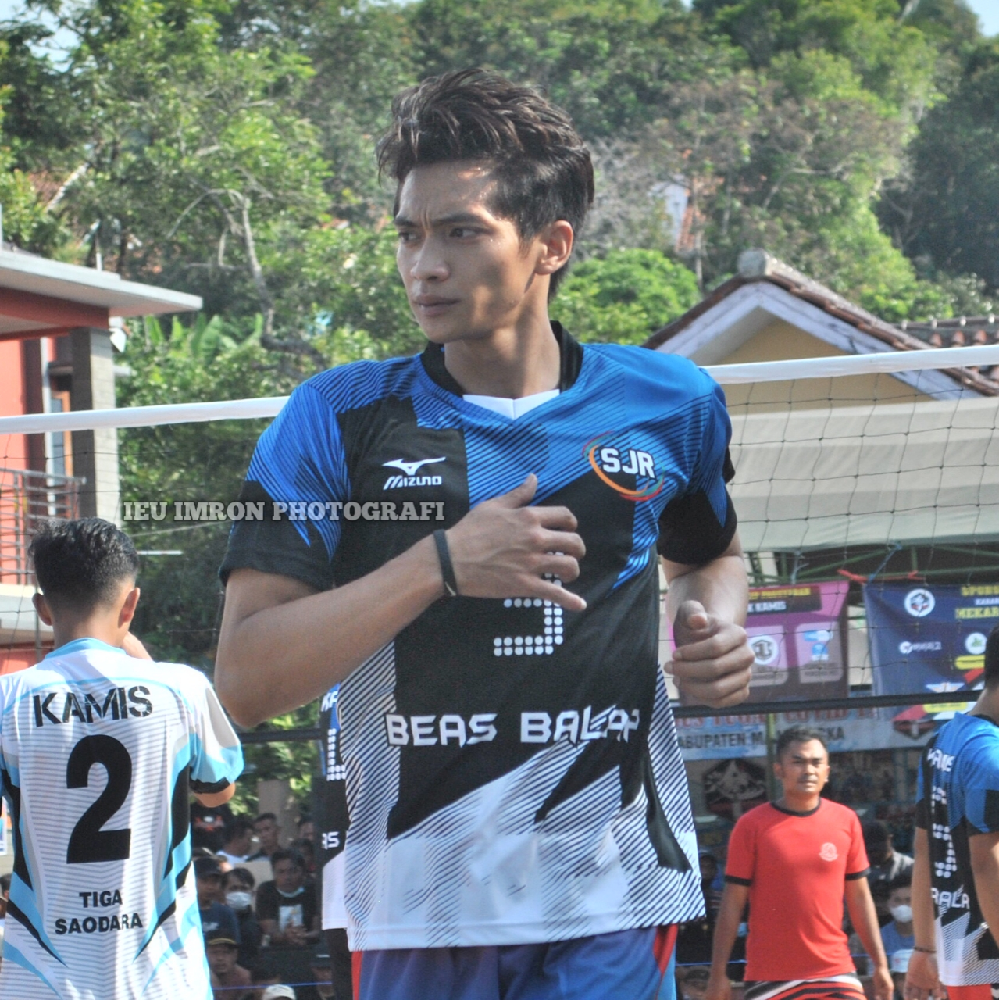

Gallery ieu imron official



Saya memang belum lama menjadi content creator Volleyball, karena itu saya tidak akan pernah berhenti belajar.
Saya ingin menguasai Editing video Yang berkualitas dan layak serta nyaman di tonton. ieu imron, sebuah nama yang tiba tiba saja tercetus di pikiran saya ketika sedang memikirkan nama untuk Channel saya sebagai content creator. Menitih karir sebagai conten creator dimulai sejak duduk dibangku SMA kelas 3, hampir satu setengah tahun saya menggeluti dunia youtube bola voli. Diawali karena ikut ikutan teman membuat video yang kebetulan saya menyukai hobi olahraga voli, secara tidak sengaja saya bertemu dengan salah satu content creator bola voli senior yang sudah lama malang melintang. dari sana saya belajar pertama untuk terjun ke dunia conten creator bola voli, dan akhirnya sampai sekarang. hampir setiap wilayah di jawa barat dan jawa tengah telah saya jajaki, setiap event boola voli yang ada kami sebagai ieu imron official selalu ada untuk menjadi bagian dari media peliput.
Simak video ini untuk mengetahui tentang saya sebagai Content creator Volleyball